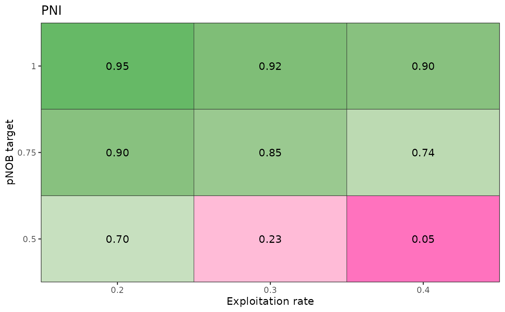
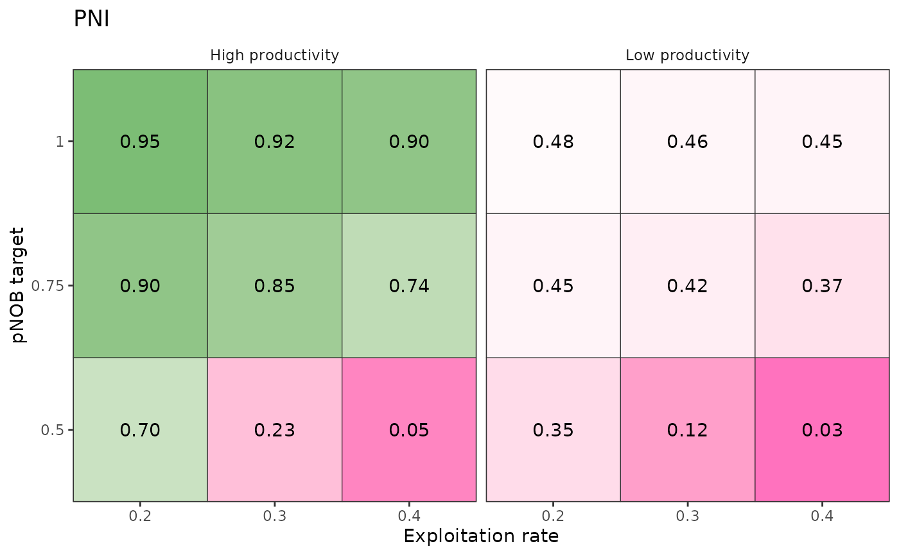
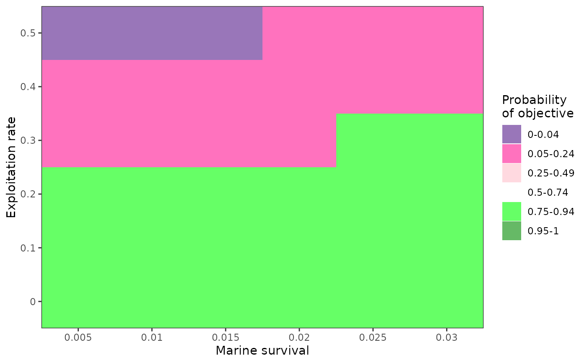

Generates a coloured table of a performance metric across two axes, which may be a population dynamics variable (e.g., productivity) or a management action (e.g., hatchery production levels or harvest strategy). See example at https://docs.salmonmse.com/articles/decision-table.html. More examples below.
plot_decision_table()is a simple figure where colour range is intended to continuously transition from pink to white to green corresponding to values of 0, 0.5, and 1, respectively.plot_decision_table2()is converts performance metrics values into bins and provides more user control in the colour scheme
Usage
plot_decision_table(
x,
y,
z,
title,
xlab,
ylab,
scenario,
ncol = NULL,
dir = "v"
)
plot_decision_table2(
x,
y,
z,
title,
xlab,
ylab,
zlab,
scenario,
ncol = NULL,
dir = "v",
bin = c(0, 0.05, 0.25, 0.5, 0.75, 0.95),
bin_labels = c("0-0.04", "0.05-0.24", "0.25-0.49", "0.5-0.74", "0.75-0.94", "0.95-1"),
bin_col = c("purple4", "deeppink", "pink", "white", "green", "green4"),
cell_border = FALSE,
add_values = FALSE
)Arguments
- x
Atomic, vector of values for the x axis (same length as z). Will be converted to factors
- y
Atomic, vector of values for the y axis (same length as z). Will be converted to factors
- z
Numeric, vector of values for the performance metric
- title
Character, optional title of figure
- xlab
Character, optional x-axis label
- ylab
Character, optional y-axis label
- scenario
Atomic, vector of faceting variables (same length as z) used to generate a grid of decision tables
- ncol
Integer, number of columns for decision table grid, only used if
scenariois provided- dir
Character, either "h" or "v" to describe how the grid of tables should be organized (horizontally or vertically)
- zlab
Character, optional color legend
- bin
Numeric vector of bins to sort values of
z- bin_labels
Character vector for bin names for the figure
- bin_col
Character vector of colors for the bins in the figure
- cell_border
Logical, whether to add borders for each cell in the figure
- add_values
Logical, whether to add the values of
zin the figure
Examples
# Simple decision table
results <- data.frame(
PNI = c(0.7, 0.23, 0.05, 0.9, 0.85, 0.74, 0.95, 0.92, 0.9),
pNOB = rep(c(0.5, 0.75, 1), each = 3),
ER = rep(c(0.2, 0.3, 0.4), 3),
scenario = "High productivity"
)
plot_decision_table(
x = results$ER,
y = results$pNOB,
z = results$PNI,
title = "PNI",
xlab = "Exploitation rate",
ylab = "pNOB target"
)

# Multiple decision tables organized by scenario
# Continuing from above
results_low <- results
results_low$scenario <- "Low productivity"
results_low$PNI <- 0.5 * results$PNI
results_all <- rbind(results, results_low)
plot_decision_table(
x = results_all$ER,
y = results_all$pNOB,
z = results_all$PNI,
title = "PNI",
xlab = "Exploitation rate",
ylab = "pNOB target",
scenario = results_all$scenario
)

# Example of binned decision table
df <- expand.grid(
SAR = seq(0.005, 0.03, 0.005),
ER = seq(0, 0.5, 0.1)
)
df$value <- ifelse(5 * df$SAR + 0.2 > df$ER, 0.75, 0.05)
df$value <- ifelse(df$SAR < 0.02 & df$ER > 0.4, 0.04, df$value)
plot_decision_table2(
x = df$SAR,
y = df$ER,
z = df$value,
xlab = "Marine survival",
ylab = "Exploitation rate",
zlab = "Probability\nof objective"
)
